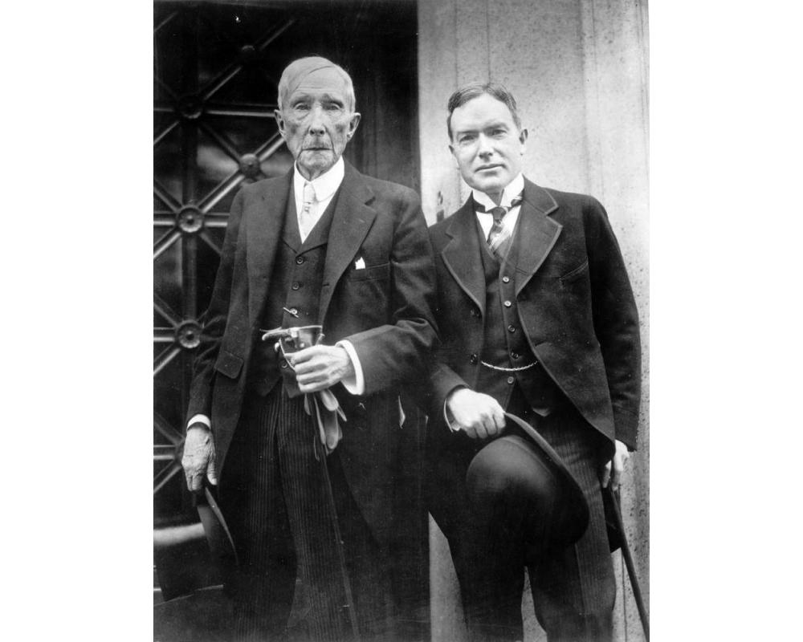
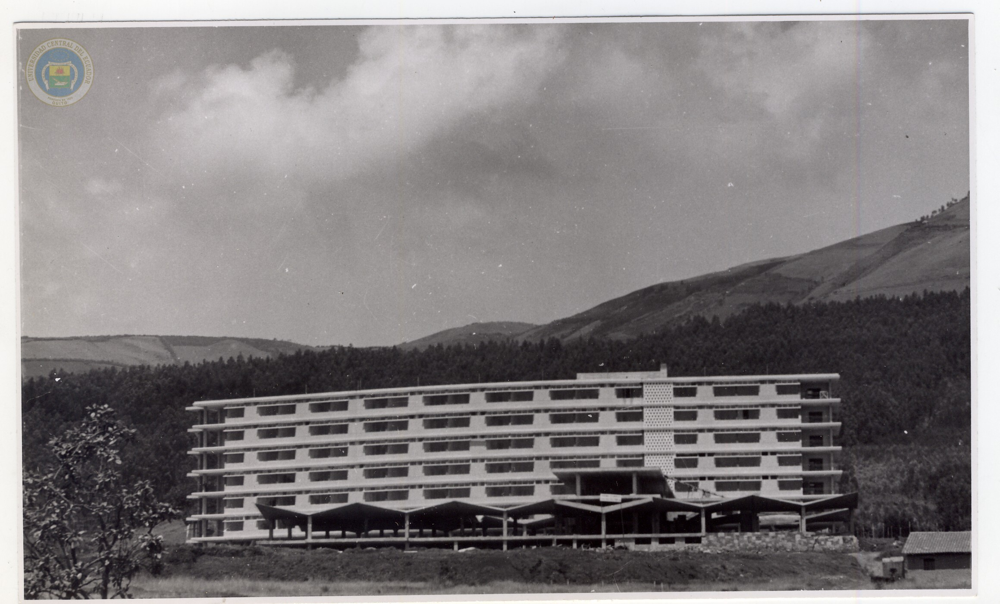

Consolidación de la infraestructura científica
En el año 1958, según los Anales de la Universidad de Quito, la Universidad Central del Ecuador fortalece de manera visible su infraestructura tecnológica, consolidando los avances científicos iniciados a comienzos de la década.
Instituto de Ensayo de Materiales y Estática
Durante el periodo 1957–1958 se encuentra casi concluida la construcción del Pabellón del Instituto de Ensayo de Materiales y Estática, un edificio diseñado de forma funcional para la realización de ensayos de materiales y estudios de estática.
Además, el instituto recibió una valiosa donación de equipos tecnológicos por parte de la UNESCO, lo que permitió dotar al pabellón de instrumental moderno para la época, incrementando significativamente su capacidad experimental y científica.

Fototeca UCE. 1965 - 1968. Facultad de Ingeniería Matemática e Instituto de Residencia de Materiales.
https://bibliotecadigital.uce.edu.ec/s/fototeca/item/1655#?cv=&c=&m=&s=Fundación Rockefeller y desarrollo científico
En este año se menciona también la oferta de cooperación de la cooperación de la Fundación Rockefeller, destinada al fortalecimiento de la Facultad de Agronomía.
- Laboratorios científicos
- Museos científicos
- Hacienda modelo para prácticas técnicas
La donación estaba condicionada a la construcción previa de la infraestructura correspondiente, evidenciando planificación y compromiso institucional.

Cmbfound. 1915. John D. Rockefeller Sr. and John D. Rockefeller Jr.
https://cmbfound.org/centennial-timeline/china-medical-board-launched/Residencia Universitaria de la UCE
En 1958 se concluyó la construcción del edificio destinado a la Residencia Universitaria de la Universidad Central del Ecuador, como parte del proceso de expansión de la ciudadela universitaria.
El proyecto fue diseñado por el arquitecto Gatto Sobral, contribuyendo al desarrollo de infraestructura destinada al bienestar estudiantil y al fortalecimiento de la vida académica universitaria.
Esta obra refleja el crecimiento institucional de la universidad y la modernización de sus espacios educativos durante la década de 1950 .

Fototeca UCE. 1955 - 1957. Residencia Universitaria.
https://bibliotecadigital.uce.edu.ec/s/fototeca/item/488#?cv=&c=&m=&s=